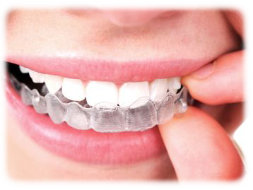

Ortodoncia
.png)
Brackets estéticos
A la hora de elegir los brackets, lo primero a tener en cuenta es que el paciente o la persona que los vaya a llevar no va a notar grandes diferencias en función de que el material de su composición sea de una u otra forma: metálicos, cerámicos (del color de los propios dientes) o transparentes de zafiro.
La diferencia entre los brackets metálicos o estéticos va a ser principalmente visual. Los segundos pasan más desapercibidos y no se aprecian en una distancia corta; por su parte, los brackets metálicos ofrecen una mayor resistencia.
La cuestión está en conocer qué brackets son mejores, metálicos o estéticos, y dentro de los segundos, brackets de zafiro o cerámicos… Veamos cómo son cada uno de ellos.
Sistema Damon
En el mercado existen diferentes tipos de brackets que están pensados para corregir la alineación dental. Dentro de ellos tenemos los brackets Damon, un sistema autoligable que, además, tiene la opción de ser transparente (Damon Clear). Por tanto, se trata de una alternativa muy popular entre las personas que necesitan ortodoncia porque reducen su visibilidad y, por tanto, son más estéticos.
Los brackets Damon Clear se fabrican con un tipo de cerámica que es transparente. Esto permite que, al colocarse en la boca, apenas se aprecien. Además, debido a su material, no se tiñe ni se decolora si tomas café, vino o si eres fumador/a.
.png)

Invisalign
Invisalign es un tratamiento de ortodoncia sencillo y cómodo que destaca por sus excelentes resultados y por una mayor estética en su uso. Con Invisalign podemos conseguir en poco tiempo una dentadura y una sonrisa de película sin necesidad de usar brackets.